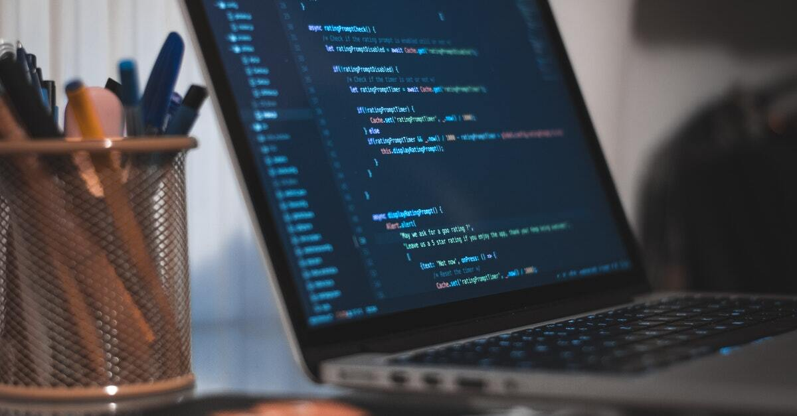

In der Hightech-Welt des digitalen Designs sind Stift und Papier manchmal immer noch die
beste Methode.
Bis heute sind Papierprototypen nicht nur praktikabel, sondern auch weit verbreitet. In diesem
Artikel werden wir darüber sprechen, wann man sie verwendet, warum sie helfen können und
wie man sie an Ihre eigenen Bedürfnisse anpasst.
Was ist Papier-Prototyping?
Die grundlegendsten Papierprototypen sind Skizzen jedes Bildschirms. In einem
Demonstrations- oder Usability-Test werden die Skizzen je nach Benutzeraktionen getauscht.
Aufgrund der Popularität des Prototyping auf Papier stehen jedoch mehrere fortschrittliche
Tools zur Verfügung, um den Prozess zu erleichtern. Sie können Schablonen verwenden , um
Schaltflächen und Symbole schnell und genau nachzubilden, und sogar Handyhüllen
nachahmen, um besser darzustellen, wie das Produktformular aussehen wird.
Das Paper-Prototyping ist artverwandt mit dem Storyboard und Wireframe. Es zählt zu den low-fidelity-Prototypen. In einfachen Entwürfe und Skizzen visualisieren wir die Kernelemente einer Benutzungsschnittstelle auf Papier, Pappe, Transparentpapier und/oder Post-It’s. Das erfolgt bei uns für die ersten Ideen vorrangig handschriftlich und durch Scribbeln. Allerdings bedienen wir uns auch einiger Templates, die wir am Computer als Wireframe erstellt haben, wenn der Prototyp einen höheren Detaillierungsgrad erreicht hat. Auch die Rahmen für die jeweiligen Ausgabemedien, die sich von Screen zu Screen wiederholen, legen wir im Vorfeld am Computer an.
Wie detailliert wir beim Paper-Prototyping arbeiten, hängt vom jeweiligen Einsatzzweck und unserem Zeitfenster ab. Auf jeden Fall gehören Schere, Fineliner, Filzstift, Klebestreifen und weiteres Papier immer zu unserer Grundausstattung – damit reisen wir dann auch bei unseren Kunden an! Die Präsentation bekommt so einen starken Workshop-Charakter.
Anhand des Papier-Prototypens können wir nun die Inhalte, Strukturen sowie den generellen Aufbau des zu entwickelnden Digitalprodukts untersuchen. Dies hilft uns, um unsere Ideen dem Entwicklungsteam, den potenziellen Nutzern sowie gegenüber Stakeholdern zu kommunizieren. Denn mittels Paper Prototyping machen wir erste Ideen erlebbar und für die Weiterentwicklung bewertbar. Im nächsten Schritt ist der Papierprototyp für uns die ideale Vorlage im Design-Entwurf.
Vorteile und Nachteile
Natürlich ist das Prototyping auf Papier kein vollständiger Ersatz für das digitale rototyping.
Es hat jedoch einige Vorteile, die sein Pendant mit höherer Wiedergabetreue nicht hat. Sehen
wir uns die Vor- und Nachteile des apier-Prototypings an, wie wir es in The Ultimate Guide to Prototyping beschrieben haben.
Vorteile:
- Schnelle Iteration – Niemand möchte einen digitalen Prototyp wegwerfen, der Stunden
gedauert hat, aber nur wenige vergießen Tränen über eine 5-minütige Skizze. Mit
Prototyping auf Papier können Sie mehrere Versionen erstellen – und wegwerfen – ohne
Zeit zu verschwenden.
Günstig — Papier ist natürlich billig, und selbst zusätzliche Werkzeuge und Kits werden die
Bank nicht sprengen.
Erhöhte Kreativität — Die Freiheit von Bleistift und Papier erleichtert das Experimentieren
und neue Ideen mehr als Software, die durch ihre Funktionen und die Vertrautheit des
Designers eingeschränkt ist.
Teambuilding — Unterschätzen Sie nicht die Auswirkungen von unterhaltsamem
Kunsthandwerk in einem geschäftlichen Umfeld. Zusammen zu zeichnen, auszuschneiden
und zusammenzufügen kann die Einheit im Team stärken und die Stimmung heben.
Geringere Lernkurve – Jeder kann Ideen skizzieren, was das Prototyping auf Papier zu einer großartigen Möglichkeit macht, andere Abteilungen wie Marketing, Entwicklung oder sogar
Interessengruppen einzubeziehen.
Automatische Dokumentation — Papierprototypen sind selbst ein greifbares Dokument. Notizen können für zukünftige Iterationen direkt darauf geschrieben werden, und sie können als Erinnerung an das, was sie gelehrt haben, vollständig sichtbar belassen werden.

Nachteile :
Keine Bauchreaktionen – Ein Großteil des UX-Designs beruht auf den Bauchreaktionen
des
Benutzers bei der Verwendung des Produkts. Es gibt jedoch keine Möglichkeit, die
Erfahrung der Verwendung eines digitalen Produkts auf Papier zu reproduzieren, egal wie
detailliert es ist.
Ungenaues Feedback –Papierprototypen erfordern viel Vorstellungskraft, und es geht
viel
verloren, wenn man sich vorstellt, wie ein Produkt aussehen wird. Was die Benutzer denken,
kann anders sein als Sie, aber das Feedback spiegelt dies nicht wider.
Zusätzliche Schritte – Papier-Prototyping ist oft der Selbstzweck und wirft die
Frage auf: „Ist
das notwendig?“ Wenn man bedenkt, wie optimiert die Benutzerfreundlichkeit von Digital-
Prototyping-Apps ist, könnte es schneller sein, digitale Lo-Fi-Prototypen mit Software zu
bauen, als Zeit mit Papier zu verbringen und später sowieso auf die Software umzusteigen.
Natürlich können Sie, wie bereits erwähnt, in Apps wie unserer Fotos von Papierskizzen
integrieren, damit es keine Verschwendung sein muss.